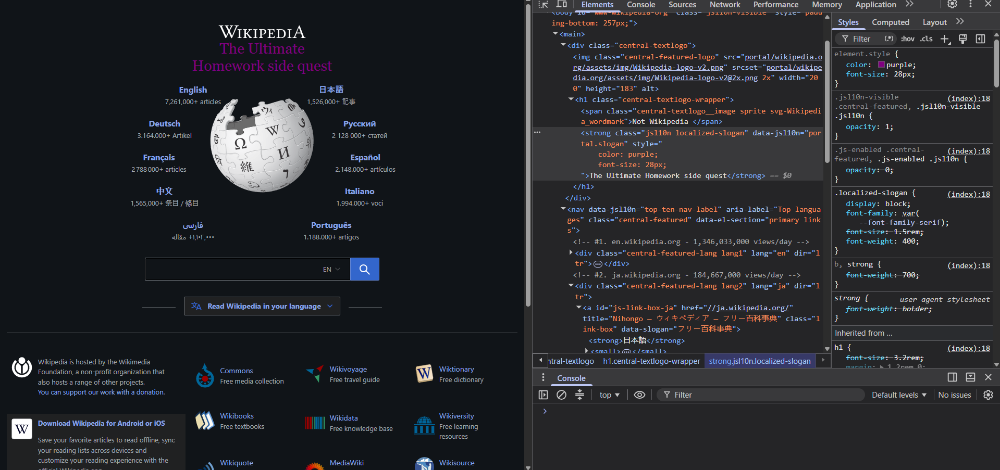

Week 04 Exercise 01 · Dev Tools Vandalism
Wikipedia: The Ultimate Homework Side Quest
I used browser developer tools to temporarily change the Wikipedia homepage into a homework side quest. The screenshot below shows the edited page alongside the Elements and Styles panels. These changes were local to my browser and did not change the real website.

What I changed
- HTML content: I replaced the tagline “The Free Encyclopedia” with “The Ultimate Homework side quest.”
- Text color: I added
color: purple;to the tagline. - Text size: I added
font-size: 28px;, making the tagline larger and causing it to wrap onto two lines.
The new tagline turns researching homework into a game-style side quest. The purple color and larger text help the joke stand out from the rest of the homepage.
HTML and CSS working together
The HTML controls the words on the page, while CSS controls their appearance. Editing the tagline text changed its meaning, and changing the color and font size changed how it looked. Refreshing the page removes these temporary edits.